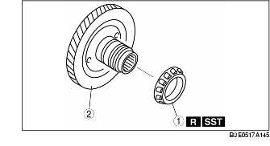
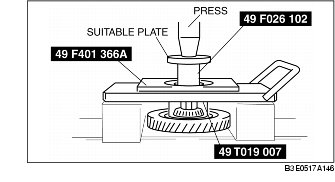
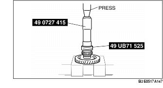

Primary gear disassembly/assembly
1. Disassemble in the order indicated in the table.
2. Assemble in the reverse order of disassembly.

|
1
|
Bearing
(See Bearing Disassembly Note.)
(See Bearing Assembly Note.)
|
|
2
|
Primary gear
|
Bearing Disassembly Note
• Remove the bearing from the primary gear using the SSTs and suitable plate.

Bearing Assembly Note
• Install the bearing to the primary gear using the SSTs.
